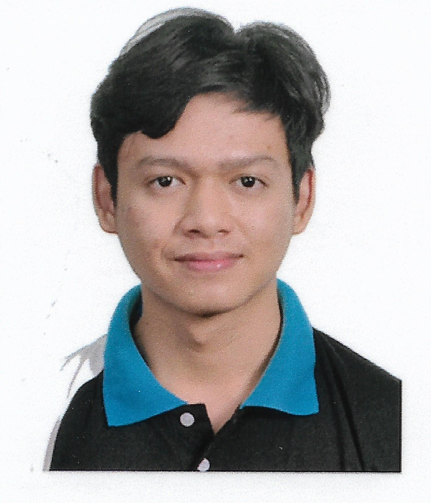

|  |
|
| Muhammad Saqif Shazli Bin Rosli |
|
|---|---|
| 2258 Jalan Bakti 4 Desa Seri Iskandar 32610, Seri Iskandar, Perak Malaysia |
Mobile : +60179054230 Home : +60123456789 Email : yuushierin@outlook.my / muhammad_22005568@utp.edu.my |
|
My name is Saqif Shazli and I am an IT student at Universiti Teknologi Petronas in Malaysia. I have a passion and strength for coding, designing, and effective communication. I can write code that is clean and efficient, design graphics that are visually appealing, and express complex ideas clearly. I enjoy the dynamic world of information technology and I am always eager to learn new technical skills. I also have a natural sense of aesthetics and a strong ability to communicate with others. As I progress through my academic journey, I believe that my diverse skills will help me achieve my goals and make me a useful member in the constantly changing field of information technology. |
|
|
Education & Training |
Sijil Pelajaran Malaysia (SPM), 2021 Foundation of Information Technology, September 2022 |
|
Technical Skills |
Skilled with Python, C++, Java, Oracle Database, HTML, CSS and JavaScript. |